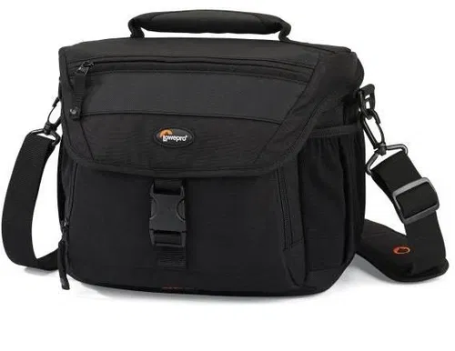
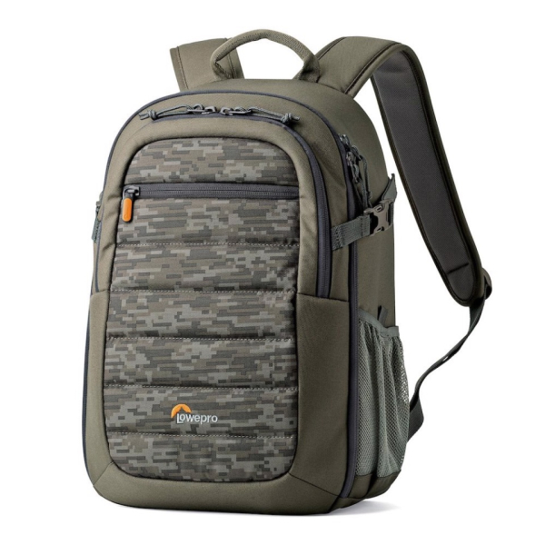

A fotós felszerelést folyamatosan védenünk kell, ha nem szeretnénk folyamatosan szervizbe küldözgetni.
Ügyeljünk a fényképezőgép és az optika tisztaságára, mivel a por- és egyéb szennyeződések kárt tehetnek a fényképezőgépben, és az optikában.
Lehetőleg ne ejtsük le, óvjuk meg az esőtől! Az objektívcsere minél rövidebb ideig tartson, ez minimalizálja a gépbe jutó por mennyiségét.
Mindig az legyen az első, hogy a gépet a nyakunkba vesszük!
A felszerelés biztonságára, és tárolására egyaránt alkalmas a fotós táska.
Fotós táskából kétféle létezik: Válltáska, és hátizsák
1. ábra Válltáska
2. ábra Hátizsák
A válltáska olyan fotósoknak lett tervezve, akiknek fontos a gyors objektívcsere. Egy vállon kell őket hordani.
Villámgyorsan fel lehet nyitni a tetejét, ami gyors hozzáférést biztosít a felszerelés számára.
Általában egy nagy, és egy kisebb zsebet lehet rajta találni. A nagyobba a fényképező, és az objektívek, a kisebbe általában akkumlátorok, illetve egyéb kiegészítők kerülnek.
Előnyei ellenére hosszútávon (pl. túrázásnál) kényelmetlen lehet egy vállon cipelni azt a súlyt.
A hátizsák kényelmes, túrázásra alkalmatos alternatíva.
Két vállon kell őket hordani, úgy mint egy rendes hátizsákot.
Vannak olyan hátizsákok, amelyekbe csak a felszerelés fér bele, de akadnak olyanok is, amelyek a személyes tárgyak elhelyezésére szolgáló zsebet is tartalmaznak.
Hátránya, hogy a nagyzseb kinyitásához le kell tenni sík felületre (pl. pad, asztal), tehát az objektívcserélés macerásabb dolog vele.
A jó fotóstáska tartalmaz egy nagy zsebet, amibe a felszerelés minden olyan eleme elfér, amely nélkülözhetetlen az utazáskor. Belefér egy, vagy két fényképezőgép, pár objektívvel, két akkumlátor, egy memóriakártya, szűrők, stb.
Illetve még plusz pont, ha hátizsák esetében a személyes tárgyakra is gondolnak a táska gyártói.